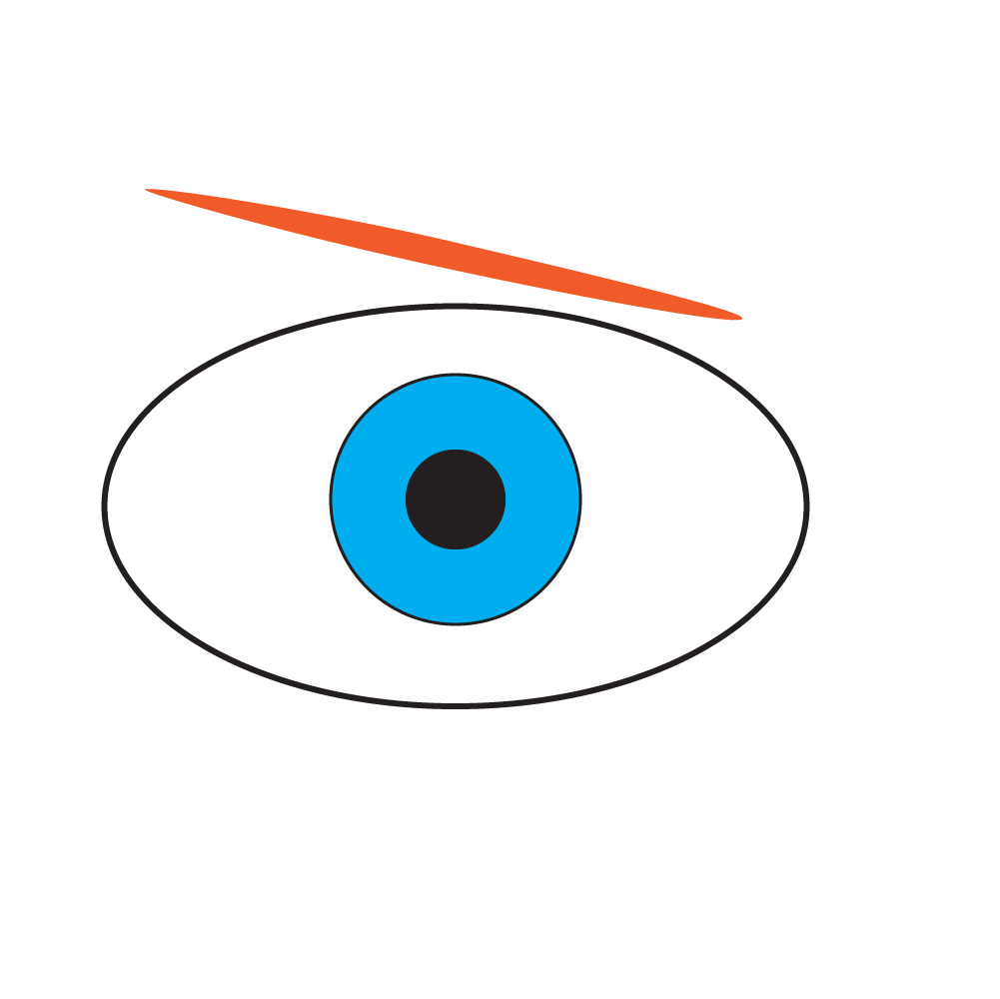

There is something enigmatic about the way I create. Drawn to the rawness of social documentary and the openness of abstract art, I like work that ignites emotion without telling you exactly what to feel. While color is my initial trigger, my primary focus is the overlooked fragments of reality others often pass by. I isolate camouflaged details and make them the centerpiece. My style is raw, nostalgic, and grounded in a little mystery. I intentionally avoid staged images because they can feel inorganic to me. Instead, I prefer to capture things naturally and allow the work to speak for itself. I like placing hidden messages throughout my work, leaving enough room for two people to look at the same piece and walk away with completely different interpretations.
My creativity also shows in the way I express myself. To the naked eye, I'm a simple woman, but my funky hairstyles, abstract nail designs, and bold, vibrant tattoos may say otherwise. I believe there is always something more to notice if you pay attention. As I explore new forms of visual storytelling, I want to strengthen my ability to translate personal observations into shared feelings. I avoid imparting obvious meanings or common perspectives because I don't want to decide what someone should see or feel. I prefer to create open invitations for viewers to look, look again, and notice what is hidden right beneath the surface.
My Artwork
A collection of what I see, what I feel, and what I imagine.
Emotive Eye
BLINK BLINK

Concrete View
I chose a photograph of New York City by Eric Van Nynatten because I was captivated by his perspective of the buildings and the sunset. I was drawn to the blue sky and pink clouds because they made the city look more dreamy from an upward view. Using Adobe Illustrator, I transformed the photograph into an illustration by using the pencil tool to outline the buildings and create abstract shapes. I used the rectangle tool to add windows, dimension, and details to the buildings, including thin lines at the top of the Empire State Building. For the clouds, I used gradients to blend the pink and white tones from the original photograph, while using a light gray shade for the softer clouds. I also used the paintbrush tool and a gradient effect to create the sunlight, along with a straight line to show the sun ray reflecting on the building. My goal was to capture the beauty of the city's sunset while creating my own artistic version of the photograph.